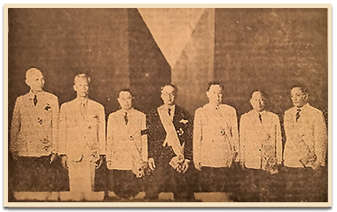

|
j
a v a s c r i p t |
December 12, 1944

The Decorated
Today's Tribune picture is of Alunan, Sison, Yulo, Laurel, Recto, Alas and Paredes — all uncomfortably wearing their latest imperial decorations. Paredes looks the saddest; Laurel the most satisfied. Tribune: "30 More U.S. Ships Blasted" (Daihon-ei). Six planes of the Tanshin Special Unit sank seven ships by body-crashes — a mathematical feat. "New landed enemy force thrown back." Japanese planes couldn't find a single American vessel afloat in Ormoc Bay. "Nippon practically has command of air over P.I." — Americans only control airfields in "Tacloban, Dulag and Damulaan." The article says the Americans that landed around Albuera are being bombed and strafed "without any obstruction." "[Special] Attack Squadrons sink 94 vessels" — since October 25. No doubt kamikazes are doing some damage after allowing for all the exaggeration. Despite their claim of air superiority, the Japanese are cautious about sending convoys into Manila. Ships do come in occasionally but only by the twos and threes.
"Police Notes" from last Sunday's Tribune: "Death claimed Avella y Camacho, 23, of 1096 Antonio Rivera, just as his two-month prison term expired and he was about to be set free." He was found dead in his cell at the Bagumbahay Precinct — the coroner's verdict: "undernourishment"! The lowest quote for poor quality rice at Tutuban is P400 a ganta — about P10,000 a sack! The discrepancy in the price of food between Manila and the provinces is fantastic. RICOA was supposed to gather enough food for rationing, but time hasn't heard of RICOA, and you can't sweeten an empty stomach on good intentions alone. Someone recently stole all the papayas from Schaer's trees, vegetables from the Feltmanns, and some chickens from the Albertos. Some of the men working on the Casa Blanca shelter sneaked into our yard and stole some of our wash — fortunately not much. The less sympathetic gripe about the hundreds of petty robberies occurring daily while sitting down to a breakfast of eggs, toast and jam, coffee with sugar and milk, and fruit. Such is life. I saw Manny downtown. He arrived several days late sans his Model-A truck, left out of gas in a Tagaytay hotel. |
|
|
|
|